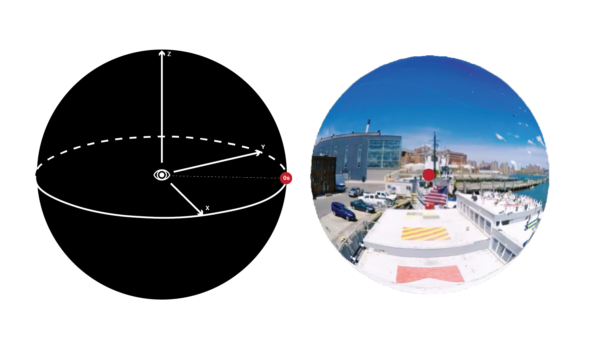
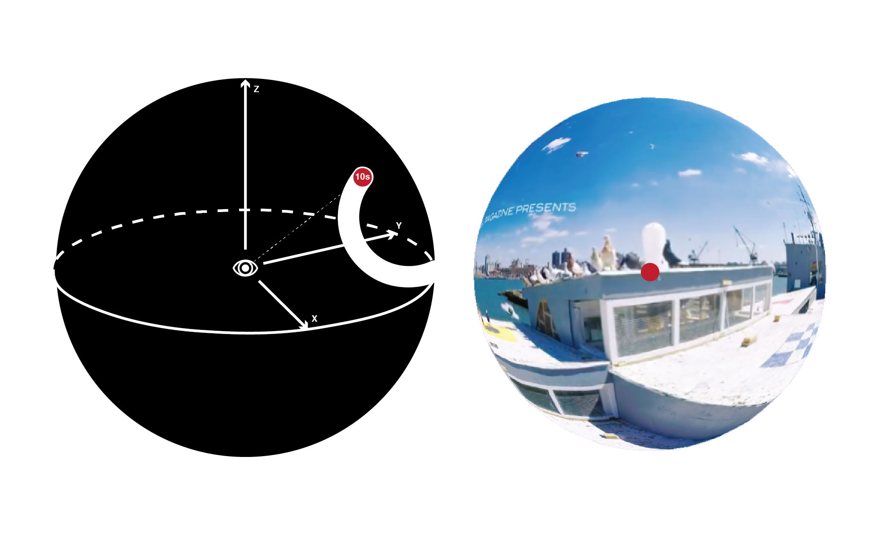
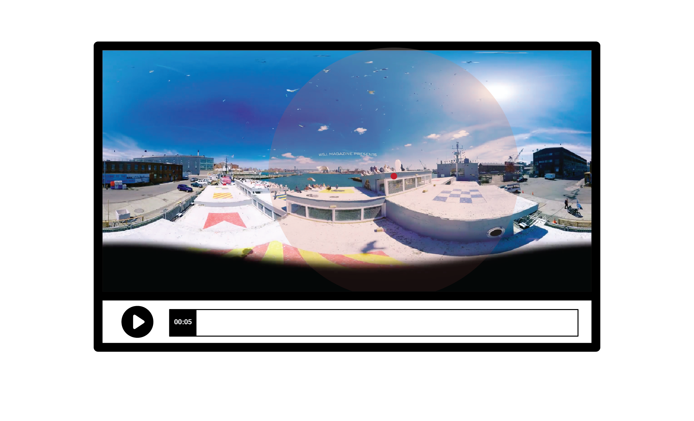
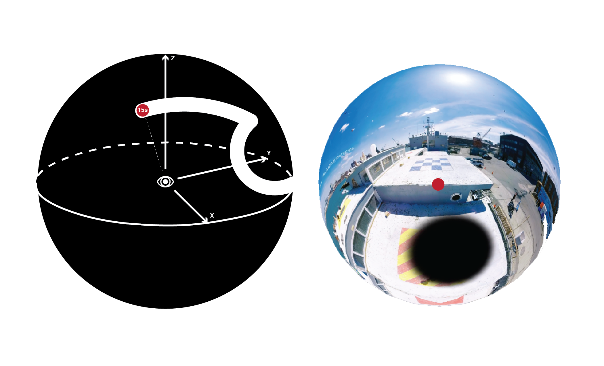
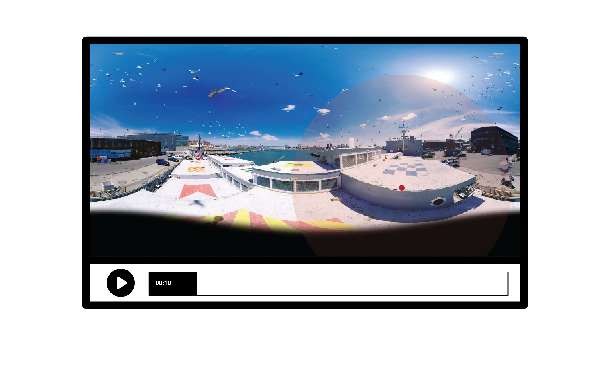
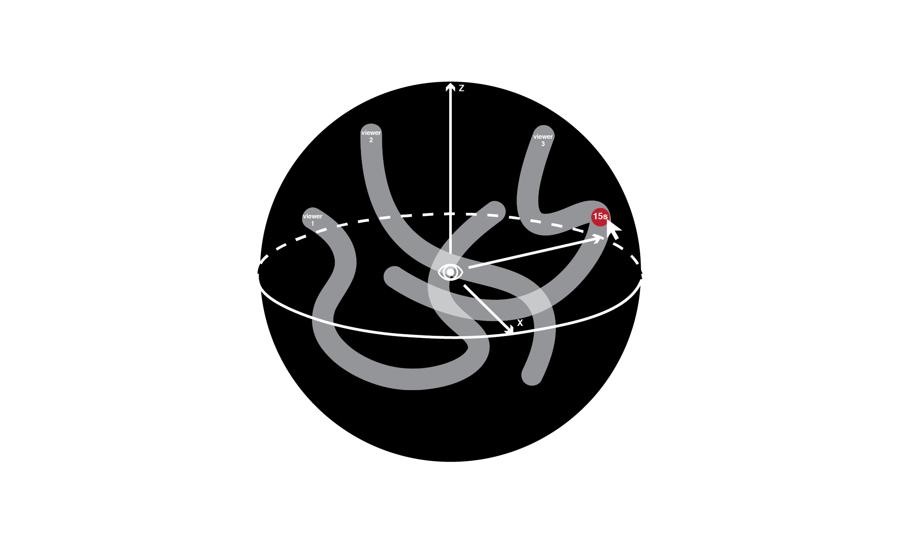
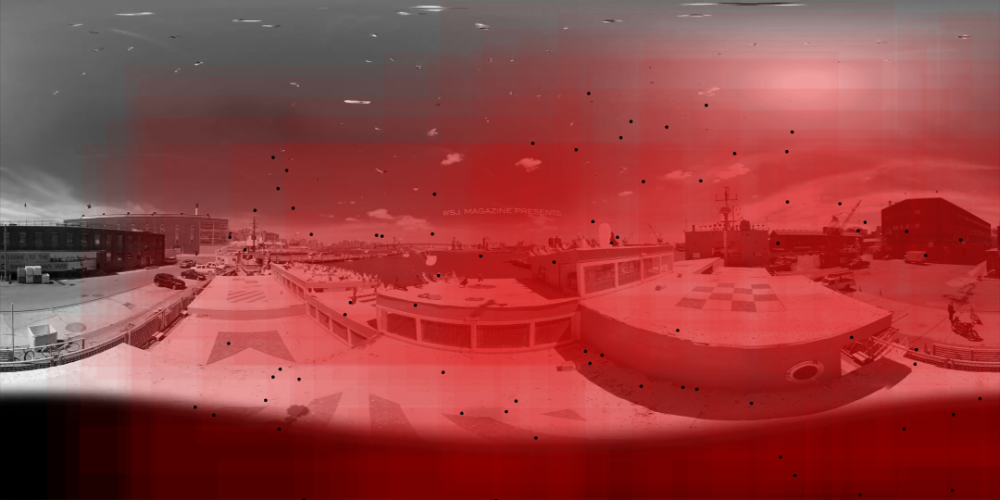

VR Eye Tracker
08.2017 _ now [ a work in progress ]
Capturing the series of angles generated by users wearing a google cardboard and watching a VR video, a heat map of “most viewed area” of the 360 video content can be visualized on a 2D plan.
The challenges include how to convert the series of Euler angles to two coordinates on a 2D plan, how to replicate the user’s view experience and verify the accuracy of the view, and how to visualize the “popularity” through head map along with the dimension of time.
task abstraction and early mock up:
1.for a individual user





2.for several users

snapshoots for the 1st iteration of the prototype:

_development tools:
node.js, three.js, canvas.js